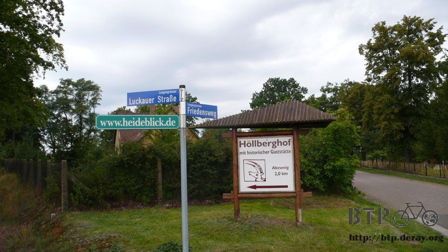
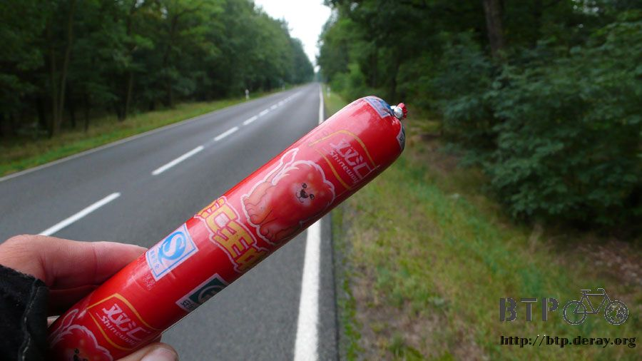
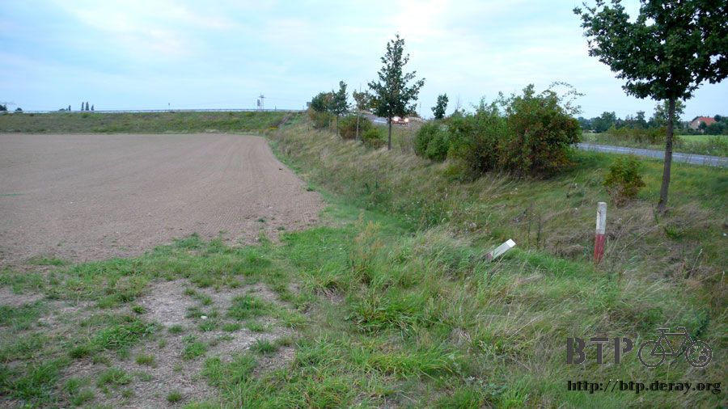

有靈魂的人們
早上六點半左右就起床了，連續兩天都睡在水泥地板上，因為覺得地面很平整，所以懶得將睡墊拿出來鋪。
結果就睡得很差，地面平整是沒錯，但是太硬梆梆了，而且入夜後變得超冰冷的，跟睡在冰塊上沒有差異。
睡袋收到一半的時候，出現一個看起來很像警衛的人。
對方說的是德語，完全聽不懂在講什麼，但是依口氣跟態度來判斷，他是問我睡醒之後還要多久才會離開？
看來昨天晚上當我在睡覺的時候就已經被他發現了，但是當時他並沒有將我趕走，隔天早上再來巡一次，客氣地問我何時會離開？
我說馬上就走，五分鐘後用昨天發現的水龍頭洗把臉，有點慶幸自己昨天還能睡得那麼安穩。
出發的時間很早，七點左右而已，天空一樣雲很多，這幾天感覺都很陰，雨好像要下不下的。
如果不下雨那當然很好，涼快騎車再舒適不過了，但是總覺得下雨是遲早的事情，現在只能趁天氣好多趕一點路。
看到的田地如果不是玉米田那就是向日葵田，這個種子不知道怎麼灑的，就只有大樹下一圈的範圍沒有長出向日葵來。

進入歐洲的時間有點晚，早一個月來的話，眼前的景色全都是盛開的向日葵。
一開始看到花田都會興奮得哇哇大叫，三天之後就會打哈欠地騎過去，看到膩之後就不當一回事了。
這邊也有風力發電，這一路往巴黎吹的都是逆風，這樣感覺很吃虧，北京到巴黎大致上都是由東往西走，
可是風都是從西邊吹過來，如果反過來騎應該會輕鬆很多，至少風勢站在自己這一邊。
這一段是汽車專用道，沒別的路就只好硬上，反正出發的時間很早，路上沒什麼車輛。
騎完了汽車專用道之後才能繼續走黃色八十七號，而且接下來就不是汽車專用道，那如果我不硬闖的話，那該怎麼辦才好呢？
這一條八十七號的路也走不了多遠了，接下來的路錯綜複雜，自己也搞不清楚該怎麼騎，走一步算一步吧。
換個角度看這些高大的風車，太陽完全被阻隔在厚重的雲層上方，偶爾才能看見一些光芒照映而下。
馬路兩邊種的大多是樹木，偶爾也會種果樹，這一棵開滿紅花的則很罕見，都快要秋天了還開得這麼漂亮。
還好這一路上經過的都是小鄉小鎮，不至於會在裡面變成大迷路的狀態，順著最大條的路走，就算左彎右拐的還是能走出來。

這些路牌實在很有意思，標示路名是正常的，連網址都標出來真是很神奇，是這一個鎮的官方網站嗎？
歐洲的鄉鎮就很有歐洲的感覺，有陽台或是院子的人家，一定會種很多漂亮的花，有房子的地方也一定會有自行車專用道。
看到這個小麥梗堆出來的人偶，不禁哼起『哈囉～你好嗎～衷心感謝～珍重再見～期待再相逢』。
有看過『我們這一家』這部卡通的人，應該多少都會覺得這個人偶很像花媽吧？
行李食物消耗戰開始進行，目前最有歷史的是這一條在中國邊境買的熱狗腸，已經足足攜帶了兩個多月的時間。

這麼簡單的包裝，可以抵擋高溫跟酷寒，日曬及雨淋，而且還沒有壞，打開之後味道還是很香，吃了也不會拉肚子。
本來想把這一根留著當作煮泡麵的加料，但是肚子餓得受不了，先吃再說。
飲水的補充也讓我很傷腦筋，路上都沒發現有水龍頭可以裝自來水。
早上看見兩個老婆婆在門口閒話家常，厚著臉皮過去拿出空空如也的水壺，用英文講『WATER』，希望老婆婆能夠裝水給我喝。
沒有太大的期望，以免到時候失望更大。
聊天中的老婆婆馬上展開笑顏，空水壺交由一位老婆婆拿去房子裡面裝水，這一位則陪我聊天。
目前德文的溝通能力是零，用簡單的自我介紹說自己是台灣人，要騎到巴黎去。
沒多久水壺就裝滿了冰涼的水，如獲至寶地蓋上蓋子收起來，下次能夠補充水不知道是什麼時候，得省一點喝才行。
很彆腳地用英文跟波蘭文道過謝後離開，感覺巴黎好像不怎麼遠了，至少當我說要騎去巴黎的時候，老婆婆的反應是『快到了～就在前方』。
很快就有了驗證的機會，某個鎮上插著一根柱子，標示著一大堆地方的距離，最底下的牌子寫著巴黎。
不知道它的算法是用什麼當作基準，但是只剩下短短的一千公里而已。
雖然很清楚實際上要騎的路絕對不止這個距離，但看到還是覺得很開心，騎了這麼久的車，終於就要到終點了。
下一次看到指往巴黎的標示牌時，人應該已經在法國了才是。
休息時間，沒有錢進餐廳，進加油站的商店看有什麼東西能買總行吧。
這一路上經過的加油站這麼多，為什麼會挑這一間我自己也說不出來，也許很多事情冥冥之中都有註定吧。
商店的規模很大，飲料、餅乾、雜誌、地圖，所有我需要的東西都有，只要有錢的話要將包包塞到爆炸都沒問題。
之前很喜歡買來吃的瑞士捲，標價從台幣二十五元變成八十元，看得我很傷心，想吃卻買不下手。
最後買了一個很大包的綜合巧克力餅乾，標價一點九九歐元，全部都用零錢付帳，面額比較大的硬幣留下來比較好用。
今天的開銷額度花光了T_T

商店裡還有附設小型的咖啡廳，就是一台咖啡機而已，附帶的就有兩張桌子讓客人站著喝咖啡，我就站在這邊吃餅乾。
餅乾這種東西明明就可以邊騎車邊吃，幹嘛要站在店裡吃呢？
因為我看到了冰箱連接在地上的部分，是一條三孔的延長線，還有一個空間可以使用。
拿著自己的充電器問員工說能不能讓我充電一下？
跟早上要水的時候一樣，沒抱什麼期望，以免失望。
店員看了一下我手上的充電器，然後看著地下的延長線，明白了我的意思，很大方地讓我在店裡面充起電來。
就這樣中午找到了寫遊記的地方，打開電腦的時候竟然也發現免費的無線網路，連加油站都能夠輕鬆上網，歐洲真是太方便了。
男員工看著我的電腦，我就用圖片簡單地說明自己的行程，接著竟然換到一杯免費的熱咖啡！

怕我不好意思喝，所以男員工也不問我要不要喝咖啡，直接就泡好放在桌上，說這個請我喝。
然後還附帶了一本介紹手冊，是這一個區域的簡介，包含城堡、名產和歷史典故，都是德文看不懂，看看照片感受一下當地的風情。
有一個地方可以充電寫遊記兼上網就非常完美了，雖然沒有椅子可以坐，但還是努力地站著寫完了昨天的遊記。
趁可以上網的時候趕緊透過網路問一下簡單的德語該怎麼講，迅速惡補完『你好、謝謝、再見』這三句話。
臨走的時候男員工說等一下，又拿了一大袋的東西給我。
是一大瓶的礦泉水，紙袋中還有四個圓圓胖胖的麵包，看得我眼淚都要流出來了。
用剛剛才學會的德文頻頻道謝，現在總算不是半個啞巴，講謝謝的時候能讓對方聽懂是很開心的事情。
謝謝你們，我在店裡一站就是兩個多小時，臉皮很厚，不好意思。
走出加油站的時候天空還是一樣陰陰的，偶爾會看到一點點藍天，沒幾秒鐘又被遮蔽，一整天都默默地祈禱著不要下雨～不要下雨～
因為天氣很冷，萬一下雨的話，又冷、又濕、又吹風，那感覺一定很差，如果因此而生病那更慘，都已經是旅行的尾聲了，讓我順利騎完吧。
很多時候騎在自行車專用道都會有迷路的感覺，因為看不見道路指示牌就會讓我覺得很不心安。

景色固然很漂亮，可是這邊真的能通往我想去的地方嗎？
上面那一條路走著走著就變成這樣，路沒了，接下來是草地，旁邊又是護欄，想走回道路也不行，只好騎在不是路的路上。
昨天買了一袋的番茄跟一袋的蘋果，番茄很快就吃完了，不耐放的東西先吃，一整袋足足二十幾顆的蘋果就變成今天的主食。
吃蘋果的時候旁邊是養馬的地方，拿著吃剩的蘋果核在柵欄外東晃西晃，想吸引馬的注意力。
本來距離很遠的馬，真的就衝刺跑了過來，看著我手上的蘋果，一副就是很想吃的樣子。
之前有餵羊吃過蘋果，經驗還算豐富，但是餵馬又是另外一回事，遠遠看覺得很小隻，近看真是超大一隻。
鼻孔就這麼大一個，餵馬吃蘋果的時候很怕被銳利的牙齒咬到手指，小心試了幾次都掉到地上，最後就放在柵欄上讓馬自己吃。

吃好道相報，又跑來了兩隻馬，但是我已經沒有蘋果核可以餵你們吃了，這些蘋果還要讓我再吃好幾餐呢。
這一路上爬了很多橋，有橋就有河，有河就有美景，城堡式的建築隨處可見，更別提教堂、石雕這些每個鄉鎮都會有的基本元素。
河畔的草地好綠，河水也很清澈，在這樣的地方露營就是心中最佳的選擇，可惜天公不作美，我總覺得一定會下雨。
順著筆記本中寫著的地名移動，剛進入德國的前半段還算容易，接下來道路開始像微血管那樣亂長，已經沒辦法單純走一條路就好。
路線複雜得我根本看不懂該怎麼走，所以只在筆記本中記錄了『可能』會經過的城鎮名稱。
到時候再看哪些路可以通往該處，看情況決定走那條路，真的是走一步算一步，老天保佑不會迷路得太慘。
要下雨了嗎？由於教堂的數量很多，我有想過去投宿教堂的可能性。
不知道神父或是修女收容過路旅行者的意願有多高？
只可惜這些教會的大門都是深鎖的，想厚著臉皮去問問看也沒有機會。
小朋友你好呀～德國騎自行車的人太多了，沒有人會把我當成怪叔叔看待，普遍上其它的交通工具都禮讓騎自行車的人。
德國的『Frei』不知道是什麼意思，單車專用道的下方都會搭配這個單字，『Ende』我就看得懂是結束。
當有規劃良好的自行車道出現的時候騎起來只有一個『爽』字可以形容。
鋪設平整的路面，不會和主要道路相隔太遠，讓我還可以看見道路指示牌寫些什麼，專用道的風景也是一流，給德國一個大拇指。
大拇指之後很快又變成汽車專用道，從進入德國之後這麼就反覆進行著，良好的自行車道跟惱人的汽車專用道。
而且看來一路上直到進入巴黎都是這樣的情況，但是不走這邊就沒別的路可以走呀，除了硬上之外沒有別的選擇。
硬上的結果就是這樣。
才騎了三分鐘就被警車給攔了下來，心裡想說好倒楣，標示說不能騎真的就不能騎。
大概被攔習慣了，警車靠近的時候一點也不緊張，立刻舉雙手投降，警察說這邊禁止自行車通行。
我知道呀，那該怎麼辦？
也不怎麼辦，就當場叫我把車牽過護欄，總重量將近六十公斤的小多加上行李要牽過護欄是不可能的事情。
問一下警察大人，能不能讓我再往前騎一段，從最近的出口下去，警察很堅持要我從這裡離開，所以只好一個一個卸下行李，然後分批搬過護欄。
揮揮手跟警察說掰掰，他們還停在原地不肯走，大概算準了我會趁他們離開的時候重新搬回道路上繼續騎，所以就盯著我看。

越過護欄之後是一條很陡峭的樓梯，警察叫我從這邊下去，然後自己想辦法。

牽小多下去的時候一個腳步如果沒踩好就是摔得人仰馬翻，分批將行李也拿下來，重新掛載回車上，又要開始迷路之旅了。
牆壁上的噴漆，被警察趕下來的時候有一點沮喪，這邊又是橋下，當下有一種想法就是，今天不如就睡在這邊吧，明天繼續騎。
當然只是想想而已，趁著天色還亮，把握沒有下雨的每一刻，能騎多遠算多遠。
有兩種情況我會很少拍照，第一是下雨的時候，因為拿出相機很麻煩，鏡頭被雨滴弄濕又要擦老半天。
第二就是迷路的時候，心情很差，看什麼景色都覺得沒什麼值得拍的，找路都來不及還拍什麼照呀。
從下橋開始迷路，東繞西繞亂走一通，眼淚都快要流出來了，現在騎的這個也叫路？這是田埂吧。
田埂旁邊是馬路，看不見路標所以不知道它通往哪裡，田埂騎了幾百公尺就變成翻過土的麥田。

見鬼了，那接下來怎麼辦，騎在田裡嗎？
此時有一位農夫開著四輪驅動的越野車來巡田，非常現代化，他看著我，問我騎在他的田地上面幹嘛？
當場讓我啞口無言，我指著旁邊的道路，說我其實是想走那邊，但是那邊掛著禁止自行車的牌子。
看著農夫的臉孔不苟言笑，我也不敢哈拉太多，牽車繞過一堆的雜草繼續騎禁止自行車走的馬路。
然後就是繼續地迷路，東南西北四個方向都騎過了，一堆看不懂的陌生地名，迷路的惶恐感何時才能習慣呢？
天色快要暗之前，好不容易又接上了黃色八十七號，現在有一條固定的路讓我騎都走得這麼辛苦，真不知道之後該怎麼騎才好。
太陽下山的時間不到八點，每天能騎車的時間越來越短，早上不可以賴床，越早出發越好，扣除迷路的時間，實際有效騎乘的距離根本不值一提。
快要伸手不見五指之前，決定落腳在這個公車站，今天晚上大概會下雨吧。
公車站的標誌是『H』，感覺很像旅館，水泥建築裡面很大一間，應該有六坪左右的大小，站牌下方的公車表說明晚上已經沒有車班了。
展開帳棚之後上床躺平睡覺，把握每一刻能休息的時間，明天早上才能精神飽滿地騎車。
睡在這種地方已經習慣得沒什麼好再多介紹，不過就是夜宿個公車站，有什麼好值得說嘴的？
睡覺之前都會想一些有的沒的，今天比較嚴肅一點。
一趟計劃從北京騎單車到巴黎的活動，任何人都可以給予它不同的定義。
假設今天只有出發前的記者採訪，接下來的日子都與世隔絕地騎車，沒有遊記連載，沒有新聞報導，然後幾個月之後，抵達了巴黎。
第二度上新聞，看到新聞的人會有什麼感覺？
對耶～有印象幾個月前電視有報導，說有人要騎單車橫跨歐亞，想不到真的給他騎到了。
那一路上睡覺時間都不夠了還堅持要連載遊記的結果又是什麼？
加油的聲音，我聽到了，謝謝。
除了鼓勵之外，附帶的是一些更奇怪的聲音，不斷質疑這趟旅行的意義是什麼？
施主，這個問題應該要問你自己。
遊記中不論寫了些什麼，都是我個人的記錄，今天看到那些美景、吃了什麼好吃的東西、接受了誰的幫助，想寫什麼內容是我的自由。
遊記的存在只是希望透過我的眼睛，讓更多人能夠參與這趟旅行，遊記並不是這次旅行的意義所在。
這趟旅行的意義在於它的每一天，踩下踏板前進的每一步，抵達終點只是一個結束的儀式，而不是所有價值的極致。
沒有這些平淡無奇的每一天所累積起來的里程，就沒有一趟一萬多公里的單車之旅。
抵達終點的當天就算沒有任何歡迎儀式又怎麼樣？
被吹捧為英雄或是在電視上不停看見自己的臉孔，這些並不會讓我感到高興，也不是我所追求的價值。
用『單車』完成這一趟一百年前有人選擇用『開車』進行的旅行，這才是它的精神所在，而其中所代表的意義，就讓有靈魂的人們自己去詮釋。
透過我的眼睛你們看到些什麼？
閱讀這些文字你們感受到什麼？
你們不需要餐風露宿，也不用日曬雨淋，睡公車站這種小事我自己來就好。
這趟旅行的意義不是我給予的，而是你們心中自己所下的判斷，去體會這趟旅行的意義。
繼續閱讀：9.3 學校沒教的事
歐洲-歐元－ 1：45 台幣
9.2 |
總計：1.99元 |
綜合巧克力餅乾1.99元 |
|